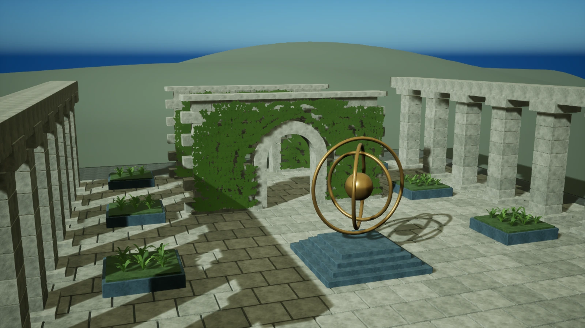

返回作品详情庭院材质与场景制作
拱门、侧廊与中央雕塑构成一处石质庭院。在原有实例布局上加入倒角石材、世界坐标材质、曲面草叶与环境反射，保留完整 UE 关卡和制作脚本。

新展示关卡：倒角石块、原创环形雕塑与草叶丛，指定环境反射与方向光共同组织明暗。
2026-11-01 · UE 5.8.1 / Windows D3D12 · 原生截图 1600×900。新关卡与历史性能实验分别保存。
倒角与形体
标准石块增加三段倒角与加权法线，保留原来的实例变换和分组。边缘形成窄高光，石墙、铺地和展台都有可辨认的厚度。中央雕塑由三个错开的圆环与球体组成，环形投影提供明确的光照参照。
材质尺度与表面起伏
石材使用原创可平铺纹理，打包高度、粗糙度与颜色变化。按世界坐标投射至三个轴面，再用法线权重混合；不同尺寸的墙块共享纹理尺度。高度导数形成细微法线变化，远景地形使用低频表面，减少细节混叠。
植被与空间层次
花池加入曲面草叶，叶片宽度沿长度收尖，中线略微隆起。双面植被着色与空间颜色变化补充受光差异。墙面藤蔓沿用本人此前 PCG 工具的烘焙结果，远景地形补齐场景边界。
展示与性能实验的关系
这张关卡用于呈现材质与场景制作。新增几何、三向采样和微表面计算会改变负载；旧 ISM 与阴影实验继续使用原关卡和原批次记录。
原创纹理 → 世界坐标三向投射 → 颜色 / 粗糙度 / 微表面法线 → 原生 UE 场景